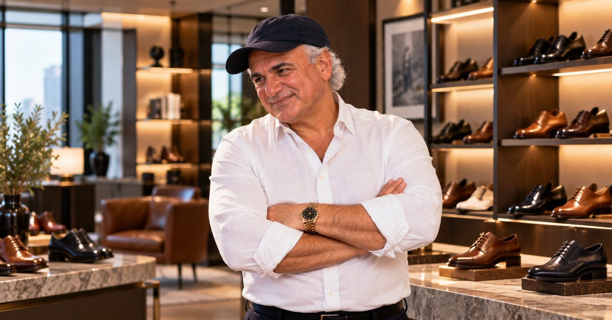

Pour La Victoire
PLVGlobal
Women's shoes and accessories
One of the two global brands made and sold by PLV Studio, Inc.
Ventures 2007 to 2014
A second fashion company, three decades after the first: women's shoes and accessories, sold under two global brands.

The two brands
Global
Women's shoes and accessories
One of the two global brands made and sold by PLV Studio, Inc.
Global
Women's shoes and accessories
The second global brand in the PLV Studio house.
March 2014
Seven years after he founded it, the private equity investment firm VMG Partners acquired a majority interest in PLV Studio.
Transaction value.
The founding
Jay Adoni founded Pour La Victoire with David Giordano, and the first collection launched in 2007. PLV Studio, Inc., based in New York, became the parent of two labels: Pour La Victoire and its younger sister brand, Kelsi Dagger.
Pour La Victoire was French inspired luxury: women's shoes and handbags in soft premium leathers made in Brazil, with each style given a French name such as Victorina or Malena. Kelsi Dagger was priced for a younger customer, with a look its creative team described as both uptown and downtown. The studio also produced licensed handbags for French Connection.
Where it sold
The brands were carried by Bergdorf Goodman, Neiman Marcus, Saks Fifth Avenue, Nordstrom, Bloomingdale's and Intermix in the United States, and by Harvey Nichols, Asos and Sarenza in the United Kingdom. In 2012 PLV Studio appointed its first European distributor.
Pour La Victoire shoes appeared on Gossip Girl, Melrose Place and The Hills, and the brand was featured in WWD, Harper's Bazaar and Teen Vogue.
In 2013 the actress Cameron Diaz took a stake in PLV Studio and became artistic director of Pour La Victoire. Her first footwear collection for the brand was unveiled in February 2014.
The investors
The private equity firm VMG Partners first invested in PLV Studio in December 2011, as reported by WWD. In March 2014 VMG acquired a majority interest in the company, seven years after its founding.
Quick answers
Jay Adoni founded PLV Studio, Inc. in 2007. The company made and sold women's shoes and accessories under the Pour La Victoire and Kelsi Dagger brands.
In March 2014 the private equity firm VMG Partners acquired a majority interest in PLV Studio.
Jay Adoni founded Pour La Victoire with David Giordano. The first collection launched in 2007.
Kelsi Dagger is the younger, lower priced sister brand of Pour La Victoire, made and sold by PLV Studio, Inc.
Pour La Victoire was sold at Bergdorf Goodman, Neiman Marcus, Saks Fifth Avenue, Nordstrom, Bloomingdale's and Intermix, and in the United Kingdom at Harvey Nichols, Asos and Sarenza.
Yes. In 2013 Cameron Diaz took a stake in PLV Studio and became artistic director of Pour La Victoire, unveiling her first footwear collection for the brand in February 2014.